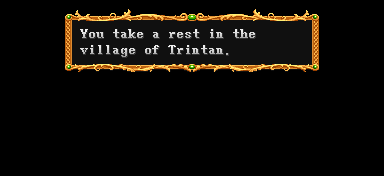
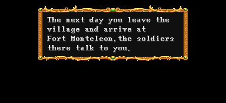
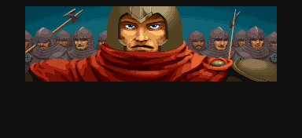
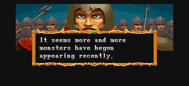
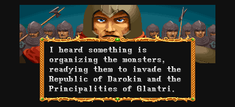
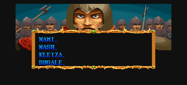
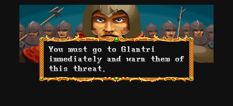
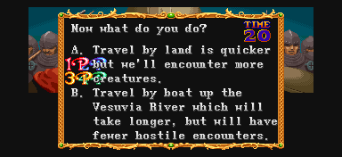

♪ BGM재생 ♪

당신은 트린턴(Trintan) 마을에서 휴식을 취했다.
(실제로 피해 입은 HP가 일정량 다시 찬다.)
(일어판)
君は、トリンタン村で戰いの疲れを癒した。
당신은 트린탄 마을 전투의 피로를 씻었다.

다음날 당신은 마을을 떠나서 몬텔레온(Monteleon) 요새에 도착했다.
그곳의 병사들이 당신에게 이야기를 한다.
(일어판)
翌日, 村を出た君は, フォトモンテレオンの砦に到着し, 軍隊の兵士から話を聞く...。
다음날, 마을을 나선 당신은 몬테레온 요새의 보루에 도착하여, 군대의 병사에게 이야기를 들었다.

이곳의 대장인듯한 자가 플레이어에게 말을 건다.

"최근에 점점 더 많은 몬스터가 출몰하는 것으로 보이오."
(일어판)
"最近、怪物達の出沒數が增えてきているよだ。"
"최근, 괴물들의 출몰수가 늘어나고 있소."

"누군가 몬스터들을 조직해서 다로킨(Darokin)공화국과
글란트리(Glantri)공국을 침공할 채비를 하고 있다고 들었소."
(일어판)
"どうやら、謎の敵がダロキン共和國、グラントリ公國の侵略にて、
怪物達を組織しているらしい。"
"아무래도 정체 불명의 적이 다로킨 공화국, 글란트리 공국의 침략을 위해
괴물들을 조직하고 있는 것 같소."

각 플레이어의 이름을 한번씩 부른다.

"여러분은 즉시 글란트리(Glantri)로 가서 그들에게 이 징후를 경고해야 하오."
(일어판)
"すぐさまグラントリ公國に向かって、このことを知らせてくれ。"
"즉시 글란트리 공국으로 향하여, 이 사실을 알려주시오."

"어떻게 하시겠소?"
A. 육로로 이동하는 것이 빠르지만 대신 더 많은 적을 마주치게 될 것이다.
→ 스테이지 3-A (To ride a Juggernaut!! : 저거노트 탑승!!)로 이동
B. 베수비아강를 따라서 배로 이동하면 더 오래 걸리지만 대신 적들을 덜 마주치게 될 것이다.
→ 스테이지 3-B (Battle on the Vesuvia! : 베수비아 강 전투)로 이동
(일어판)
"さて君だったら、どう進む?"
"자, 당신이라면, 어디로 가겠소?"
A. 近道だが、怪物の多い道を行く。
A. 지름길이지만, 괴물이 많은 길로 간다.
B. ベスビア川を舟で下る。
B. 베수비아강을 뗏목을 타고 내려간다.
▶ 스테이지 선택에 대한 이야기
기본적으로는 많은 수의 플레이어가 선택한 쪽으로 가게 된다.
그런데 각각 동일한 수의 플레이어가 다른곳을 선택했다면 A로 가게 된다.
예를 들면 2명이 A를 선택하고 2명이 B를 선택했다면 A로 결정된다.